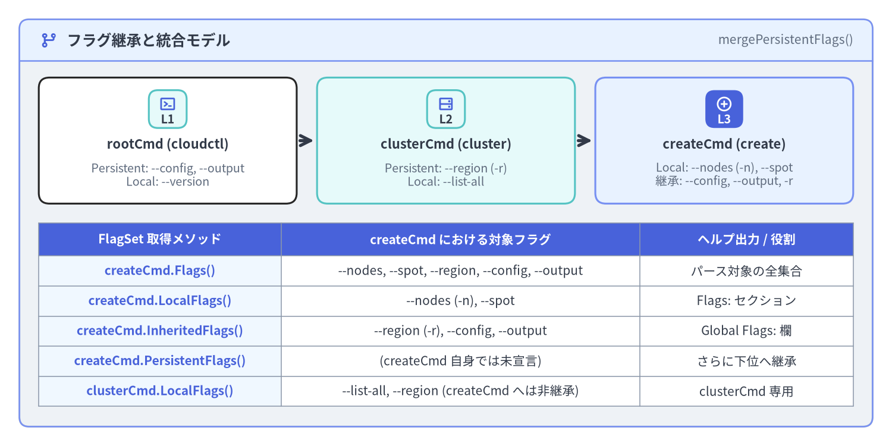
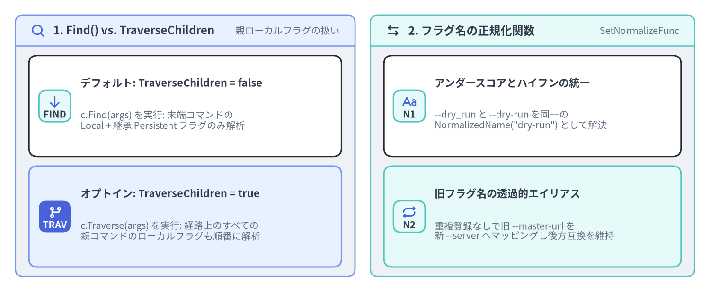

Persistent / Local フラグと継承機構（spf13/pflag）
Cobra のフラグ解析は、Go 標準 flag パッケージを POSIX/GNU 準拠に拡張した github.com/spf13/pflag によって駆動されています。Cobra は pflag.FlagSet の上に、コマンドツリーの親子関係に応じたフラグ継承モデル（PersistentFlags()、Flags()、InheritedFlags()、LocalFlags()）、親コマンドのローカルフラグ走査（TraverseChildren）、およびグローバルなフラグ名正規化（SetGlobalNormalizationFunc）を構築しています。本ページでは Cobra v1.10.2 におけるフラグ機構のすべてを解説します。

Source Code
from drawlib.canvas import save, setup
from drawlib.icons import phosphor
from drawlib.preset_colors import CssColors
from drawlib.smartarts import CardList, Panel, Table
from drawlib.styles import Colors, Styles
setup(width=184, height=92, dpi=150)
outer = Panel(
"フラグ継承と統合モデル",
"mergePersistentFlags()",
style=Styles.Neutral.patch(shape_r=2.0),
header_style=Styles.PrimaryNeutral.patch(shape_line_width=1.2),
text_style=Styles.DarkBold.patch(text_size=12.0),
description_style=Styles.Muted.patch(text_size=10.0),
icon=phosphor.git_branch,
icon_style=Styles.PrimaryBold,
header_variant="filled",
header_height=8.5,
)
outer.draw((4.0, 4.0), width=176.0, height=84.0)
tree_cards = CardList(
style=Styles.White,
text_style=Styles.DarkBold.patch(text_size=10.5),
description_style=Styles.Muted.patch(text_size=9.5),
badge_shape="rounded_rect",
badge_style=Styles.SecondaryNeutral,
badge_text_style=Styles.DarkBold.patch(text_size=9.5),
icon_style=Styles.PrimaryBold,
direction="horizontal",
show_arrows=True,
arrow_style=Styles.DarkBold,
spacing=4.0,
)
tree_cards.add(
"rootCmd (cloudctl)",
"Persistent: --config, --output\nLocal: --version",
badge_text="L1",
icon=phosphor.terminal_window,
)
tree_cards.add(
"clusterCmd (cluster)",
"Persistent: --region (-r)\nLocal: --list-all",
badge_text="L2",
icon=phosphor.hard_drives,
style=Styles.SecondaryNeutral,
)
tree_cards.add(
"createCmd (create)",
"Local: --nodes (-n), --spot\n継承: --config, --output, -r",
badge_text="L3",
icon=phosphor.plus_circle,
style=Styles.PrimaryNeutral,
badge_style=Styles.PrimaryFlat,
badge_text_style=Styles.WhiteBold.patch(text_size=9.5),
icon_style=Styles.WhiteBold,
)
tree_cards.draw(xy=(8.0, 50.0), width=168.0, height=26.0)
tbl = Table(
cell_style=Styles.White,
text_style=Styles.Dark.patch(text_size=10.0),
header_cell_style=Styles.PrimaryFlat,
header_text_style=Styles.WhiteBold.patch(text_size=10.0),
border_style=Styles.MutedThin,
)
tbl.set_style_cell_evenodd(
even_color=Colors.Light,
even_text_style=Styles.Dark.patch(text_size=10.0),
odd_color=Colors.White,
odd_text_style=Styles.Dark.patch(text_size=10.0),
)
tbl.set_style_cell_header(
background_color=Styles.PrimaryFlat.shape_fill_color,
text_style=Styles.WhiteBold.patch(text_size=10.0),
)
tbl.set_style_cell(
background_color=CssColors.AliceBlue,
text_style=Styles.PrimaryBold.patch(text_size=10.0),
rows=[1, 2, 3, 4, 5],
columns=[0],
)
rows = [
["FlagSet 取得メソッド", "createCmd における対象フラグ", "ヘルプ出力 / 役割"],
["createCmd.Flags()", "--nodes, --spot, --region, --config, --output", "パース対象の全集合"],
["createCmd.LocalFlags()", "--nodes (-n), --spot", "Flags: セクション"],
["createCmd.InheritedFlags()", "--region (-r), --config, --output", "Global Flags: 欄"],
["createCmd.PersistentFlags()", "(createCmd 自身では未宣言)", "さらに下位へ継承"],
["clusterCmd.LocalFlags()", "--list-all, --region (createCmd へは非継承)", "clusterCmd 専用"],
]
tbl.draw_flexible(
xy=(8.0, 46.0),
column_widths=[50.0, 74.0, 44.0],
row_heights=[6.8, 6.2, 6.2, 6.2, 6.2, 6.2],
data=rows,
align="top_left",
)
save()
1. PersistentFlags() と Flags() の違いと継承アルゴリズム
すべての cobra.Command は、フラグ登録用に2つの主要な pflag.FlagSet を保持しています。
cmd.Flags()（内部フィールドc.flags）: そのコマンド自身でのみ有効なローカルフラグ を登録します。実行時のParseFlags()直前に呼ばれるmergePersistentFlags()によって、自身のPersistentFlags()とすべての親・祖先コマンドのPersistentFlags()（c.parentsPflags）がc.flagsにマージされます。cmd.PersistentFlags()（内部フィールドc.pflags）: そのコマンド自身、および配下のすべての子孫サブコマンド（子・孫・曾孫…）に自動継承される永続フラグを登録します。
cobra.Command が提供する5つの FlagSet アクセサ
| メソッド | 内部フィールド | 返される FlagSet の内容 |
|---|---|---|
cmd.Flags() |
c.flags |
mergePersistentFlags() 統合後の完全な FlagSet（ローカル＋自身の永続＋親から継承した永続フラグ）。 |
cmd.PersistentFlags() |
c.pflags |
その cmd で 直接 登録された永続フラグのみ。 |
cmd.LocalFlags() |
c.lflags (動的計算) |
その cmd で直接宣言されたフラグ（Flags() と PersistentFlags() の両方）、および親の同名永続フラグを上書き（シャドウイング）したフラグ。--help の Flags: セクションに出力される。 |
cmd.InheritedFlags() |
c.iflags (動的計算) |
親・祖先コマンドから継承された永続フラグ（c.parentsPflags）。--help の Global Flags: セクションに出力される。 |
cmd.LocalNonPersistentFlags() |
動的生成 FlagSet |
cmd.Flags() に登録されたフラグのうち、cmd.PersistentFlags() に含まれない純粋なローカルフラグ。 |
親の永続フラグのシャドウイング（上書き）: もし親の
rootCmd.PersistentFlags()で--timeout=30sが定義されている状態で、子のdeployCmd.Flags()が同名のローカルフラグ--timeout=5mを定義した場合、mergePersistentFlags()は既存のフラグを上書きしないため、deployCmdの実行時には子自身の--timeout=5mが優先されます。
2. spf13/pflag による型付きフラグバインド
フラグの値を取得する際は、RunE の中で cmd.Flags().GetString("...") を呼ぶのではなく、コマンドの *Options 構造体のフィールドに対して *Var / *VarP ポインタバインドメソッド を使うのがベストプラクティスです（文字列キーのタイポを防ぎ、Validate() でそのまま型付きフィールドを検証できます）。
package cluster
import (
"net"
"time"
"github.com/spf13/cobra"
)
type CreateOptions struct {
ClusterName string
Nodes int
Spot bool
Timeout time.Duration
Zones []string
Labels map[string]string
APIServerIP net.IP
Verbosity int
}
func NewCmdClusterCreate() *cobra.Command {
o := &CreateOptions{}
cmd := &cobra.Command{
Use: "create <cluster-name>",
Short: "新しい Kubernetes クラスタを作成",
Args: cobra.ExactArgs(1),
RunE: func(cmd *cobra.Command, args []string) error {
o.ClusterName = args[0]
// ユーザーが明示的に --nodes フラグを指定したかどうかを判定
if cmd.Flags().Changed("nodes") {
cmd.Printf("ノード数が明示的に指定されました: %d\n", o.Nodes)
}
return nil
},
}
f := cmd.Flags()
// 1. 基本型: IntVarP, BoolVar, DurationVar (末尾 P は1文字の短縮フラグを受け取る)
f.IntVarP(&o.Nodes, "nodes", "n", 3, "初期ワーカーノード数")
f.BoolVar(&o.Spot, "spot", false, "スポットインスタンスを使用")
f.DurationVar(&o.Timeout, "timeout", 10*time.Minute, "プロビジョニングのタイムアウト (例: 5m, 300s)")
// 2. スライスとマップ: StringSliceVar はカンマ分割を行う、StringArrayVar はカンマ分割を行わない
f.StringSliceVarP(&o.Zones, "zone", "z", []string{"us-east-1a"}, "対象アベイラビリティゾーン (カンマ区切りまたは複数指定)")
f.StringToStringVar(&o.Labels, "label", nil, "クラスタに付与する key=value ラベル (例: --label env=prod,team=core)")
// 3. ネットワーク型・カウンタ型: IPVar, CountVarP (-v = 1, -vvv = 3)
f.IPVar(&o.APIServerIP, "api-ip", net.ParseIP("10.0.0.1"), "コントロールプレーンの固定 IP")
f.CountVarP(&o.Verbosity, "verbose", "v", "ログ詳細度の引き上げ (-v, -vv, -vvv)")
return cmd
}
頻出の注意点：StringSliceVar と StringArrayVar の違い
pflag メソッド |
入力: --arg="a,b" --arg="c" |
パース結果 []string |
推奨される使い分け |
|---|---|---|---|
StringSliceVar |
CSV パーサによりカンマ , で分割される |
[]string{"a", "b", "c"} |
タグ一覧やゾーン名など、値自体にカンマが含まれない識別子リスト。 |
StringArrayVar |
カンマで分割せず、指定された文字列をそのまま追加 | []string{"a,b", "c"} |
フィルタ条件式・JSON 文字列・ファイルパスなど、値の中にカンマが含まれる可能性がある場合。 |
3. 明示的指定の判定（Changed）と省略時デフォルト値（NoOptDefVal）
3.1 デフォルトのゼロ値と明示的なゼロ指定を区別する（Flags().Changed）
Go では int のゼロ値は 0、bool のゼロ値は false です。リソース更新コマンド（例: cloudctl cluster update prod --nodes=0 でノード数を0にスケールインしたい場合）において、「ユーザーが --nodes を省略したのか」それとも「明示的に --nodes=0 を指定したのか」を判別するには cmd.Flags().Changed("nodes") を使用します。
if cmd.Flags().Changed("nodes") {
// デフォルト値と同じ値であっても、コマンドライン上で明示的に指定された場合のみ true になる
patchReq.Nodes = &o.Nodes
}
3.2 値省略時のデフォルト値を設定する（NoOptDefVal）
単なるスイッチ（--output）としても、値付き（--output=yaml）としても使えるハイブリッドなフラグを作るには、Flag.NoOptDefVal を設定します。
cmd.Flags().StringVarP(&o.Output, "output", "o", "table", "出力フォーマット (table|json|yaml)")
cmd.Flags().Lookup("output").NoOptDefVal = "json"
// 動作:
// cloudctl get pods -> o.Output == "table" (通常のデフォルト値)
// cloudctl get pods --output -> o.Output == "json" (フラグ名のみ指定時の NoOptDefVal)
// cloudctl get pods -o=yaml -> o.Output == "yaml" (明示的な指定値)
4. TraverseChildren とフラグ名のグローバル正規化

Source Code
from drawlib.canvas import save, setup
from drawlib.icons import phosphor
from drawlib.smartarts import CardList, Panel
from drawlib.styles import Styles
setup(width=184, height=76, dpi=150)
left_panel = Panel(
"1. Find() vs. TraverseChildren",
"親ローカルフラグの扱い",
style=Styles.Neutral.patch(shape_r=2.0),
header_style=Styles.PrimaryNeutral.patch(shape_line_width=1.2),
text_style=Styles.DarkBold.patch(text_size=11.5),
description_style=Styles.Muted.patch(text_size=9.5),
icon=phosphor.magnifying_glass,
icon_style=Styles.PrimaryBold,
header_variant="filled",
header_height=8.0,
)
left_panel.draw((4.0, 4.0), width=88.0, height=68.0)
l_xy, l_w, l_h = left_panel.get_content_box((4.0, 4.0), width=88.0, height=68.0, padding=(3.5, 2.5))
trav_cards = CardList(
style=Styles.White,
text_style=Styles.DarkBold.patch(text_size=10.5),
description_style=Styles.Muted.patch(text_size=9.5),
badge_shape="rounded_rect",
badge_style=Styles.SecondaryNeutral,
badge_text_style=Styles.DarkBold.patch(text_size=9.5),
icon_style=Styles.PrimaryBold,
direction="vertical",
spacing=2.5,
)
trav_cards.add(
"デフォルト: TraverseChildren = false",
"c.Find(args) を実行: 末端コマンドの\nLocal + 継承 Persistent フラグのみ解析",
badge_text="FIND",
icon=phosphor.arrow_down,
)
trav_cards.add(
"オプトイン: TraverseChildren = true",
"c.Traverse(args) を実行: 経路上のすべての\n親コマンドのローカルフラグも順番に解析",
badge_text="TRAV",
icon=phosphor.git_branch,
style=Styles.PrimaryNeutral,
badge_style=Styles.PrimaryFlat,
badge_text_style=Styles.WhiteBold.patch(text_size=9.5),
icon_style=Styles.WhiteBold,
)
trav_cards.draw(l_xy, width=l_w, height=l_h)
right_panel = Panel(
"2. フラグ名の正規化関数",
"SetNormalizeFunc",
style=Styles.Neutral.patch(shape_r=2.0),
header_style=Styles.SecondaryNeutral.patch(shape_line_width=1.2),
text_style=Styles.DarkBold.patch(text_size=11.5),
description_style=Styles.Muted.patch(text_size=9.5),
icon=phosphor.arrows_left_right,
icon_style=Styles.DarkBold,
header_variant="filled",
header_height=8.0,
)
right_panel.draw((96.0, 4.0), width=84.0, height=68.0)
r_xy, r_w, r_h = right_panel.get_content_box((96.0, 4.0), width=84.0, height=68.0, padding=(3.5, 2.5))
norm_cards = CardList(
style=Styles.White,
text_style=Styles.DarkBold.patch(text_size=10.5),
description_style=Styles.Muted.patch(text_size=9.5),
badge_shape="rounded_rect",
badge_style=Styles.SecondaryNeutral,
badge_text_style=Styles.DarkBold.patch(text_size=9.5),
icon_style=Styles.PrimaryBold,
direction="vertical",
spacing=2.5,
)
norm_cards.add(
"アンダースコアとハイフンの統一",
"--dry_run と --dry-run を同一の\nNormalizedName(\"dry-run\") として解決",
badge_text="N1",
icon=phosphor.text_aa,
)
norm_cards.add(
"旧フラグ名の透過的エイリアス",
"重複登録なしで旧 --master-url を\n新 --server へマッピングし後方互換を維持",
badge_text="N2",
icon=phosphor.repeat,
style=Styles.SecondaryNeutral,
)
norm_cards.draw(r_xy, width=r_w, height=r_h)
save()
4.1 どのような場合に TraverseChildren: true が必要になるか？
デフォルト（TraverseChildren: false）では、Cobra は c.Find(args) で実行対象の末端サブコマンドを見つけ出し、その末端コマンドに対して1回だけ ParseFlags() を呼び出します。親コマンドの PersistentFlags() は末端コマンドへ自動的にマージされるため、cloudctl --config=prod.yaml cluster create web のような指定は TraverseChildren: false のままでも問題なく動作します。
rootCmd.TraverseChildren = true が必要になるのは、親コマンドが 子へ継承したくないローカルフラグ（rootCmd.Flags()） を持っており、かつサブコマンド実行時にも親コマンドの位置でそのローカルフラグをパースさせたい場合（例: docker --tlsverify container ls）です。
4.2 SetGlobalNormalizationFunc によるフラグ名の正規化とエイリアス
CLI 全体で --dry_run（アンダースコア）と --dry-run（ハイフン）の揺れを吸収したり、旧バージョンのフラグ名を新フラグ名へ透過的に転送したりするには、ルートコマンドに SetGlobalNormalizationFunc を登録します。
import (
"strings"
"github.com/spf13/cobra"
"github.com/spf13/pflag"
)
func configureFlagNormalization(rootCmd *cobra.Command) {
rootCmd.SetGlobalNormalizationFunc(func(f *pflag.FlagSet, name string) pflag.NormalizedName {
// 1. すべてのアンダースコアをハイフンへ正規化 (--dry_run -> --dry-run)
normalized := strings.ReplaceAll(name, "_", "-")
// 2. 旧フラグ名を新フラグ名へ透過的にエイリアス
switch normalized {
case "master-url":
normalized = "server"
}
return pflag.NormalizedName(normalized)
})
}
rootCmd.SetGlobalNormalizationFunc(fn) を呼び出すと、ルートの Flags() / PersistentFlags() だけでなく、AddCommand() で登録された（または後から追加される）すべての子孫コマンドの FlagSet に対して正規化関数が自動的に伝播します。
次のステップ
続いて 位置引数バリデータとフラググループ制約 に進み、組み込みの位置引数バリデータ（ExactArgs、MatchAll 等）とフラグ間の共起・排他グループ制約（MarkFlagsMutuallyExclusive、MarkFlagsRequiredTogether）を学びましょう。